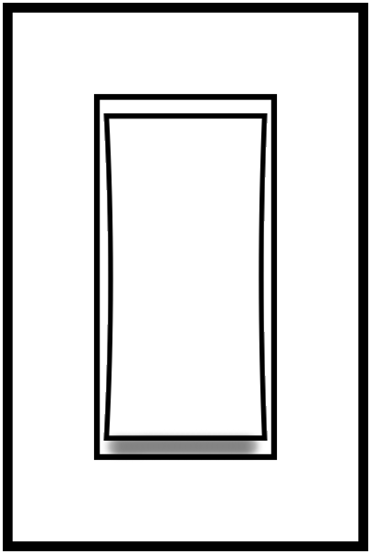
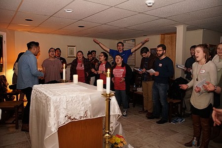
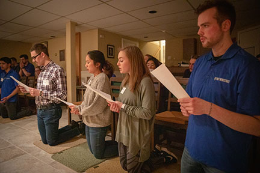

About
Services
Events
Testimonials
Contact Us
Media
Photo Credit:
@derreckstanley
Media (Press/Photos)
Check out some links to past events we have done and some photos of us performing!
Trenton Monitor Young Adult Event

Trenton Monitor: An Evening with NET Ministries

Lighting Hearts on Fire Podcast (with Kipsy & Mike) Episode 2
Check out photos from past events here!
Watch some of our past performances here!